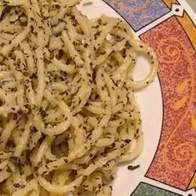

Spaghetti with Garlic and Basil Recipe

Description
This is a delicious, easy-to-make pasta dish. Best served with green salad and garlic bread.
Ingredients
- 16 ounce package of uncooked spaghetti
- 1/4 cup of extra-virgin olive oil
- 1/4 cup of unsalted butter, melted
- 4 cloves of garlic, minced
- 1 cup of fresh basil, coarsely chopped
- salt and pepper to taste
- 1/2 cup fresly grated parmesan cheese
Steps
- Bring a large pot of lightly salted water to a boil. Place spaghett in the pot, cook for 8 to 10 minutes, and drain with cold water.
- In a large bowl, toss the spaghetti with the olive oil, butter, garlic, basil, salt, and pepper until evenly coated. Serve with parmesan cheese.